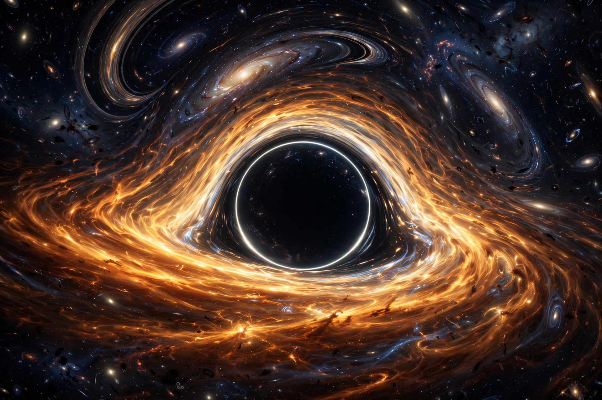

| Field | General relativity |
|---|---|
| Examples | Centre of a black hole; the initial Big Bang state |
| Key results | Penrose–Hawking singularity theorems |
A gravitational singularity, spacetime singularity or simply singularity is a condition in which the curvature of spacetime becomes infinite, or in which geodesics are incomplete — paths through spacetime simply end. Singularities are predicted by general relativity in situations of extreme density, most famously at the centre of a black hole and at the beginning of the universe.
In the Schwarzschild solution describing a non-rotating black hole, the singularity is a point of infinite density at the centre, hidden behind the event horizon. In the Kerr solution for a rotating black hole the singularity takes the form of a ring. Curvature singularities are distinguished from mere coordinate singularities (like that at the Schwarzschild radius in some coordinates) by quantities such as the Kretschmann scalar, which genuinely diverges. The Big Bang is often modelled as an initial singularity at which density and temperature were infinite; whether quantum gravity will resolve it into a bounce or another regular state remains an open research question.
In the 1960s Stephen Hawking and Roger Penrose proved singularity theorems showing that singularities are not artefacts of special, symmetric solutions but are generic features of gravitational collapse and of an expanding universe under reasonable energy conditions. Penrose's cosmic censorship hypothesis proposes that singularities formed in collapse are always clothed by event horizons, so their unpredictable physics cannot influence the outside universe; a counterexample — a "naked singularity" — has never been observed. Most physicists regard singularities as signalling the breakdown of classical general relativity and the need for a theory of quantum gravity.